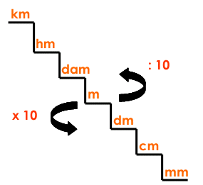
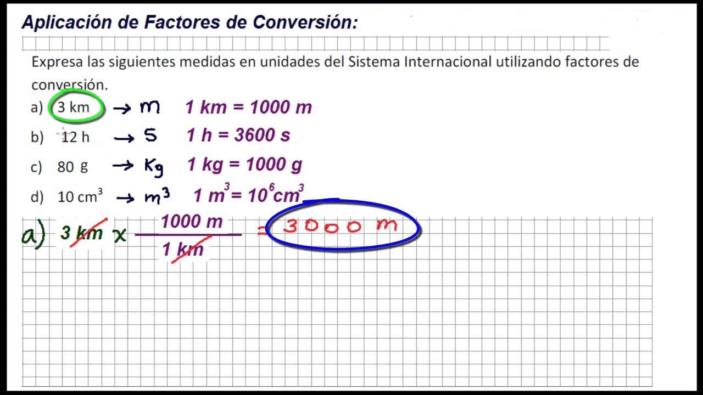
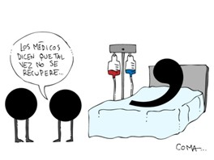
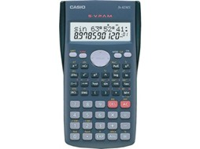
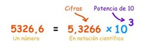
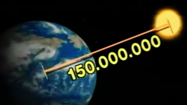

Cambios de unidades y notación científica
Ahora bien, una vez realizadas las actividades e incorporados los conceptos teóricos, tenemos que revisar los posibles obstáculos que se nos pueden presentar al momento de resolver problemas de magnitudes. La mayor dificultad reside en los pasajes de unidades. Tomaremos como ejemplo el tiempo: si tenemos que realizar un trabajo histórico, lo más probable es que utilicemos las unidades de "siglo" o "décadas"; si abordamos un relato de adelantos científicos tal vez necesitemos utilizar "años", pero si debemos resolver un problema referido a una carrera de atletismo, por ejemplo, seguramente tendremos que recurrir a unidades de tiempo mucho más pequeñas como pueden ser los "minutos", "segundo" y "décimas de segundos". Este ejemplo lo tenemos que aplicar a cada magnitud, o sea, a lo que estemos por medir, debemos seleccionar el instrumento de medición más preciso o adecuado utilizando las unidades acordes a su medida. Para esto es necesario trabajar con múltiplos y submúltiplos.

Recordar, que cuando las unidades están elevadas:
-
al cuadrado se debe dividir por 100 en el caso de querer obtener los múltiplos y multiplicar por 100 para los submúltiplos. Por ejemplo:
1 m2 debo dividir por 100 para obtener su equivalente en dam2; de la misma manera, multiplicar por 100 para obtener su submúltiplo dm2. De esta manera tendremos que 1 m2 equivale a 0,01 dam2 y a 100 dm2.
-
al cubo se debe dividir por 1000 en el caso de querer obtener los múltiplos y multiplicar por 1000 para los submúltiplos. Por ejemplo:
1 m3 debo dividir por 1000 para obtener su equivalente en dam3; de la misma manera, multiplicar por 1000 para obtener su submúltiplo dm3. De esta manera tendremos que 1 m3 equivale a 0,001 dam3 y a 1000 dm3.

Por último, y antes de poner en práctica esto último, revisemos un recurso que generalmente se lo utiliza para agilizar los cálculos, pero si no tenemos en cuenta algunas consideraciones, es el responsable de la mayoría de los errores. Estamos hablando de la máquina de calcular!!!
Por ser la mayoría de fabricación extranjera, traen "punto" en lugar de la "coma" y "coma" en lugar del "punto" ; además, de acuerdo al valor obtenido informan el resultado con notación científica.
|  |  |
Recordemos a qué nos referimos cuando hablamos de notación científica
Es una abreviación matemática, basada en la idea de que es más fácil leer un exponente (106) que contar muchos ceros en un número (1000000). Esto es válido tanto para números muy grandes como para números muy pequeños, o sea, 0,000001m se puede escribir 1 x10-6m. De esta manera, la notación científica te permite eliminar ceros delante o detrás de la cifra significativa (N° distinto de 0)

Así, cuando hablamos de la distancia que nos separa del Sol, podemos expresarla: 1,5x108 km.
|  |
Obra publicada con Licencia Creative Commons Reconocimiento Compartir igual 4.0